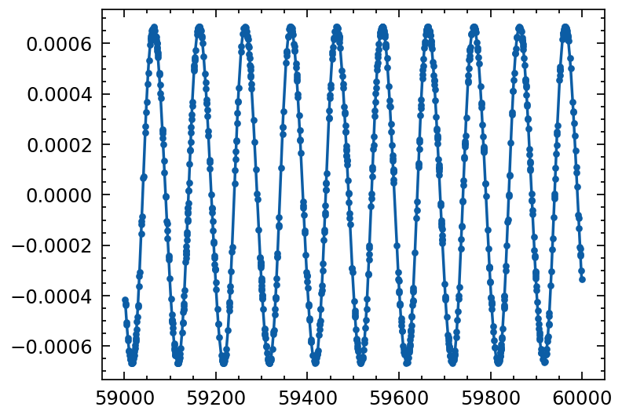

Validation of Binary algorithm
[5]:
import numpy as np
import matplotlib.pyplot as plt
import matplotlib as mpl
import wget, os
from astropy.io import fits
from tatpulsar.data.profile import draw_random_pulse
mpl.rcParams['figure.dpi'] = 250
plt.style.use(['science', 'nature', 'no-latex'])
np.random.seed(19930727)
[8]:
profile_init = draw_random_pulse(nbins=200, baseline=100000, pulsefrac=0.5)
nphot = 2000 # Number of photons to draw
tstart = 59000 # Start time of simulated event list
tstop = 60000 # Stop time of simulated event list
f0 = 29.639378
# f1 = par.f1
# f2 = par.f2
pepoch = 57981
event_list = profile_init.sampling_event(nphot=nphot,
tstart=tstart,
tstop=tstop,
f0=f0,
pepoch=pepoch)
100%|██████████████████████████████████████████████████████████████████████████| 995/995 [00:00<00:00, 233447.03it/s]
[9]:
def solve_kepler(M, e, tolerance=1e-6, max_iterations=1000):
"""
Solve Kepler's equation using the Newton-Raphson method.
Parameters
----------
M : float
The mean anomaly.
e : float
The eccentricity of the orbit.
tolerance : float, optional
The desired accuracy. The iteration stops when the change is below this threshold.
max_iterations : int, optional
The maximum number of iterations. The iteration stops when this number is reached.
Returns
-------
E : float
The eccentric anomaly.
"""
# Start with an initial guess
if M < np.pi:
E = M + e / 2
else:
E = M - e / 2
# Perform the Newton-Raphson iteration
for _ in range(max_iterations):
delta_E = (E - e * np.sin(E) - M) / (1 - e * np.cos(E))
# If the change is small enough, stop
if abs(delta_E) < tolerance:
break
E -= delta_E
return E
[15]:
# These are placeholders; replace them with your actual values
observed_times = event_list
fake_axsini = 200
fake_Porb = 100 #days
fake_omega = 1.5*np.pi
fake_e = 0.05
fake_T_halfpi = 58540
T0 = fake_T_halfpi # time of periastron passage
P = fake_Porb # orbital period
e = fake_e # eccentricity
w = fake_omega # longitude of periastron
a = fake_axsini # semi-major axis
i = np.pi / 2 # inclination of the orbit
# Compute mean anomalies
M = 2 * np.pi * (observed_times - T0) / P
# Solve Kepler's equation for eccentric anomalies
solve_kepler_vec = np.vectorize(solve_kepler)
E = solve_kepler_vec(M, e)
# Compute true anomalies
f = 2 * np.arctan(np.sqrt((1 + e) / (1 - e)) * np.tan(E / 2))
# Compute Roemer delays
c = 299792.458 #3e5 # speed of light in km/s
delta_t = a * np.sin(i) * (np.cos(w + f) + e * np.cos(w)) / c
# Compute emission times
emission_times = observed_times + delta_t
[16]:
sort_mask = np.argsort(observed_times)
plt.errorbar(observed_times[sort_mask], delta_t[sort_mask], fmt='.-')
[16]:
<ErrorbarContainer object of 3 artists>

[ ]: